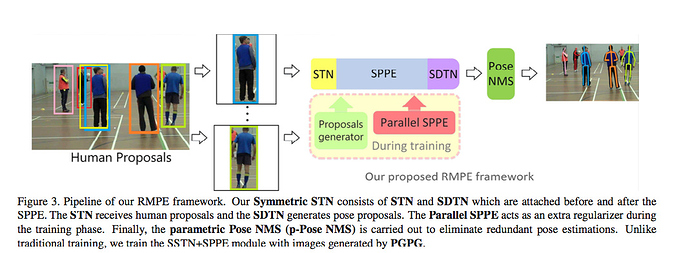
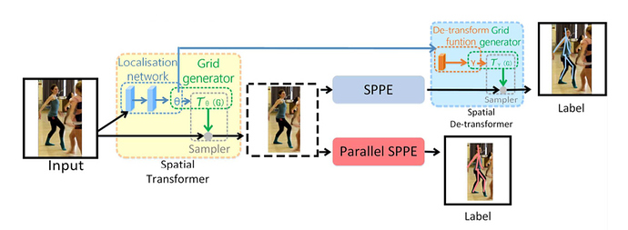
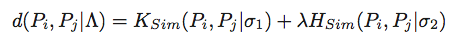
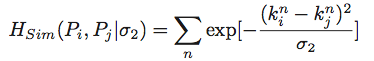
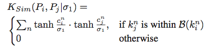
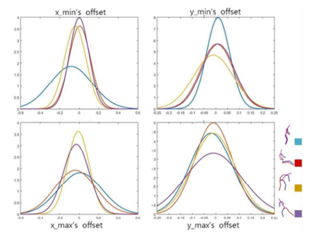
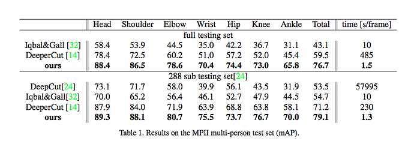
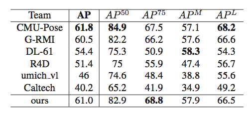

RMPE: Regional Multi-Person Pose Estimation
URL: https://arxiv.org/abs/1612.00137
【Summary】ICCV2017关于Pose Estimation的论文，主要是基于目前Top Down方法的改进。论文主要想解决一个问题，就是Top Down方法中human detector出的框不准或者比较冗余的问题。STN来映射更准的框， Pose NMS 来更好的解决冗余框的问题。
下图是论文中给出的对于RMPE方法的简单示例，整个Pipeline针对human detector出框不准或者比较冗余的问题分别进行了针对性的设计，下图中的前半段STN + SPPE + SDTN主要用于fix human detector出框不准的问题，后半段的Pose NMS主要用来解决冗余的问题：

- SPPE的改进： SPPE（Single Person Pose Estimation）主要改进的地方就是引入STN和SDTN来实现更加精确的pose estimation。细节上STN接受human detector输出的proposal（具体实现的时候会在原有的proposal基础上，长宽各扩展30%以保证覆盖全部的人体区域），STN生成的仿射变换矩阵将当前的proposal映射的更加精确，然后再输入SPPE网络中（实际实验时是4-stack hourglass结构）得到具体的joint的位置，然后通过STN的逆变换SDTN得到原始的坐标位置。下图中的Parallel SPPE作用是对STN进行进一步的监督，监督的Label是已经center-located的pose，所以当然也就不需要SDTN这一步了。从下图中也可以比较直观的看出来，上下两个branch label还是不一样的，为了映射回原坐标，上半分支的SDTN是必要的：
 - Pose NMS： 对于Pose NMS作者主要在研究一件事就是如何来定义Pose 的冗余以及消除冗余的标准，就像物体检测的NMS用IoU和confidence的逻辑一样。论文中作者用如下的方式来定义：

其中，HSim用来建模距离上的相似度，KSim用来建模confidence之间的关系，B(Kin)代表1以Kin为中心的矩形，矩形大小为这个Pose对应框的1/10：

 - 此外作者也针对所提的RMPE结构设计了Data Augmentation方法，主要是根据原子pose进行聚类，然后对于输入的图像首先对其进行分类，然后利用对应的offset分布构造一组新的数据，具体的分布信息：

在MPII数据集上的表现：

在COCO Chanllenge上的表现：

本博客所有文章除特别声明外，均采用 CC BY-NC-SA 4.0 许可协议。转载请注明来自 Out of Memory！